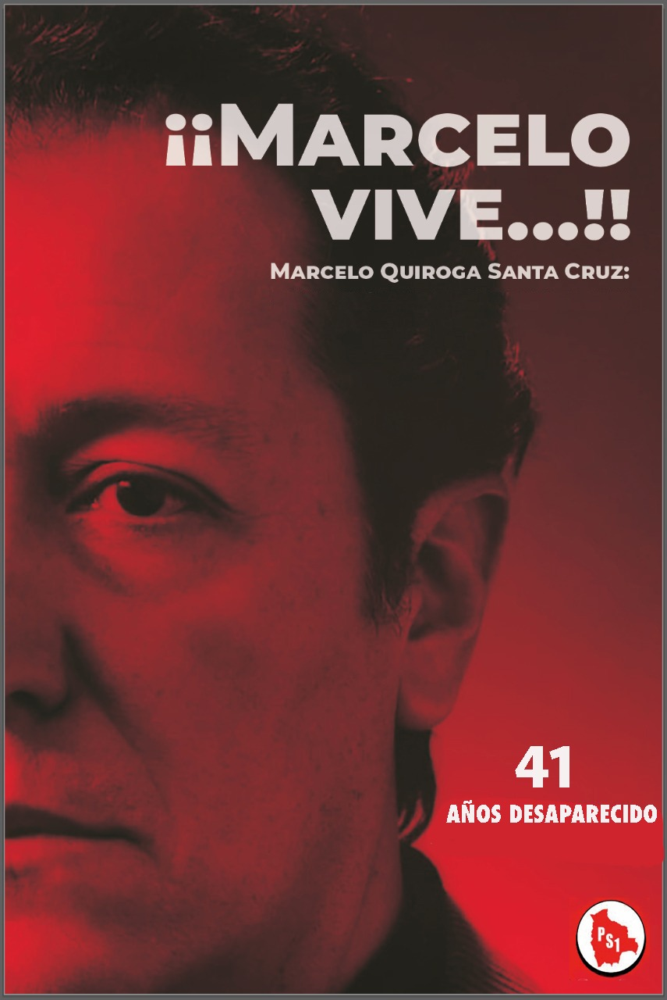

MARCELO QUIROGA SANTA CRUZ

Marcelo Quiroga es un hecho políticamente trascendente que alcanza el ámbito histórico, pese a su muerte constituye una realidad ideológica y política y está presente en las luchas populares de hoy. La memoria de Marcelo debe ser considerada como un lugar y un instrumento para conectar el pasado y el presente de la lucha por una sociedad con justicia social y una patria digna y soberana. La independencia de clase como principio político, la insurrección popular como modalidad de acceso al poder, el frente antiimperialista y antioligárquico como dirección superior de las masas y un acuerdo programático básico, fueron aspectos sustantivos en el pensamiento y la acción de Marcelo Quiroga. En los años posteriores a la revolución nacional de 1952, entre 1958-1960 incursiona en la reflexión política en una posición crítica a la conducción de la insurrección de abril y consideraba que el fracaso posterior de la revolución fue también un fracaso para la nación.
En 1966 fue elegido diputado independiente y emprendió una batalla tenaz en la defensa del petróleo y el gas, y realizó una histórica interpelación parlamentaria al ministro de minas y petróleo “por la orientación antinacional de la política petrolera del supremo gobierno” y demandó un Juicio de Responsabilidades al General Barrientos, Presidente de la República en ejercicio, por la enajenación de la soberanía nacional, al someter al país a las acciones de la Central de Inteligencia Americana (CIA) del gobierno de los Estados Unidos, donde su propio Ministro de Gobierno era un agente confeso y remunerado de la CIA. Esta audacia política le costó a Quiroga su desafuero parlamentario, fue hecho preso en el Palacio de Justicia donde se presentó a declarar voluntariamente respecto a las acusaciones que se le formulaban, se intentó su asesinato, luego fue residenciado en el campo de concentración de Alto Madidi y posteriormente puesto en prisión en la cárcel de San Pedro en la ciudad de La Paz, donde permaneció hasta después de la muerte del Presidente Barrientos.
En 1969 participó en el gobierno de Ovando como Ministro de Minas y Petróleo, nacionalizando la “Gulf Oil Company” (empresa petrolera norteamericana), recuperando para el patrimonio nacional el petróleo y el gas. Esta experiencia estatal, después frustrada, marco definitivamente a Quiroga Santa Cruz, pues habrá de modificar definitivamente su visión sobre el nacionalismo.
Marcelo es uno de los líderes que más contribuyó a desarrollar en la conciencia popular la necesidad imprescindible de la soberanía nacional y popular sobre los recursos naturales, tenía la visión clara que sin esa soberanía era imposible pensar el desarrollo económico y social de Bolivia, y por lo tanto la propia viabilidad histórica del país.
Marcelo decía que la explotación de nuestros recursos naturales no renovables sin retención nacional del excedente económico generado, descapitaliza progresiva e incesantemente al país. También sostenía que nuestra dependencia no es efecto sino causa de la miseria popular y nacional, afirmó “No somos dependientes por ser pobres. Somos pobres porque somos dependientes”.
Durante los años posteriores desarrolla esfuerzos en el intento de construir una alternativa unitaria de una nueva izquierda, fundando en 1971 el Partido Socialista, en crítica a la izquierda nacionalista y a la izquierda marxista dogmática, intenta construir una nueva dimensión para el socialismo en Bolivia, a partir de la realidad económica y social del país. En la fundación del nuevo partido afirmaba que el destino histórico de Bolivia era el socialismo, que Bolivia debía ser socialista o no podría ser más país. A los pocos meses de fundado el Partido Socialista se produjo el golpe de Estado del entonces coronel Banzer en el marco de los golpes propiciados por Estados Unidos bajo la Doctrina de la Seguridad Nacional y por amenazas concretas a su vida tuvo que buscar el camino del exilio, primero al Chile de Allende, después en la Argentina donde eludió un intento de asesinato de la extrema derecha, terminando de refugiarse en México donde se dedicó a la cátedra universitaria en economía política y escribiendo artículos sobre la problemática económica, social y política de américa latina, participando como invitado especial en eventos internacionales sobre la importancia estratégica de los recursos naturales y el análisis critico de la experiencia socialista en el mundo, permaneció en México hasta finales de 1977 cuando regresó clandestinamente al país para retomar sus responsabilidades políticas y la dirección del Partido Socialista.
Participó activamente en la lucha por la recuperación de la democracia, aunque considerando que la democratización de las formalidades burguesas no era un fin en sí mismo sino un medio para avanzar hacia formas de organización superior. Cuestionaba la institucionalización democrático-burguesa “como un cambio para que nada cambie”.
Participó con su Partido, el PS-1 en las tres elecciones en 1978,1979 y 1980, alcanzando en la última elección un crecimiento extraordinario, obtuvo un ascenso político importante en los distritos mineros, en áreas rurales y una enorme influencia especialmente en la juventud universitaria, era sin duda el líder político de mayores proyecciones.
En 1979 elegido Diputado Nacional inició el Juicio de Responsabilidades contra el ex-Presidente Banzer, bajo el principio de que “no es el odio el que impulsa nuestros actos, sino una pasión por la justicia de la que hemos dado cuenta a lo largo de nuestra vida”, sentó en el banquillo del acusado no solo al ex-dictador, sino a un sistema de poder y a una clase social, la burguesía, denunció las violaciones a la libertad, el derecho y el respeto por la dignidad de la persona humana, el daño a la economía boliviana con las políticas del régimen; develó las causas de la pobreza, el atraso y la dependencia de Bolivia, desnudó al sistema de poder de Banzer fundado en el saqueo del país, en la corrupción y en la prebendalización del sistema estatal.
El juicio también tenía por objeto la orientación y el esclarecimiento en la conciencia de las masas, de la significación de la dictadura y de su sistema de dominación y explotación. La exposición del juicio terminó diciendo: “Sabemos, ¡Que mas pronto que tarde, se cobraran esto que estamos haciendo! ¡Estamos dispuestos a pagar ese precio! ¡Siempre estuvimos dispuestos! ¡Jamás vamos a rehuir el peligro, porque mucho más temible que ese enemigo que está buscando la manera de anularnos, aún físicamente, es una conciencia culpable! ¡Y no podríamos soportarnos a nosotros mismos si no cumpliéramos nuestro deber!”.
La valentía y pasión con la que denunció los siete años de la dictadura Banzerista, al final terminarían cobrándole la vida misma. La autoridad moral de Marcelo y su reconocimiento político se fundaron en su ética política intachable a lo largo de su vida, la lucidez, el coraje y la pasión con que sustentaba sus postulados. Marcelo destaca también porque es el dirigente que hizo del socialismo una experiencia de masas, convirtiéndose en el líder socialista más importante del siglo XX en Bolivia y uno de los más destacados de América Latina.
El golpe militar del 17 de julio de 1980 comandado por el Cnel. Arce Gómez y el Gral. García Meza, tuvo como uno de sus objetivos principales el asesinato del líder socialista MARCELO QUIROGA SANTA CRUZ, acallaron cobardemente la voz de un hombre que vivió, luchó y murió por la causa justa de los desposeídos, de los explotados, de los humildes, fue asesinado porque luchaba por una sociedad con justicia social y una patria digna, libre y soberana. Los asesinos de Marcelo Quiroga Santa Cruz después de herirlo de muerte en el asalto a la Central Obrera Boliviana, lo trasladaron al Estado Mayor del Ejército donde fue salvajemente torturado hasta la muerte, para luego desaparecer los restos del líder socialista.
La democracia boliviana tiene una deuda con Marcelo y es que los altos mandos militares y los poderes políticos muestren una voluntad para la investigación que permita encontrar los restos de MARCELO, los socialistas y los bolivianos no olvidaremos nunca esta obligación del Estado.

Por:
Eduardo Pardo
Militante histórico del PS-1